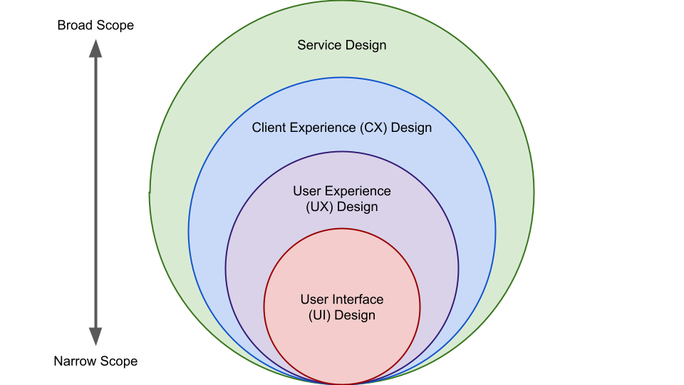

Hiring the Right Designer
Introduction
This guide explains the key considerations in assessing your hiring needs for designers, and helps you complete the companion worksheet for your assessment.
Before You Start: Assessing Your Context
Tip
We recommend that you have read and understood Understanding Design and Designer Roles before you start using this guide.
There are many types of designs and roles that designers can play however, it is not possible for one person to do all of them. Clarifying the context of your work can help establish what you need from a designer, the feasibility of hiring one, and the strategic direction of the hiring.
There are four (4) major factors in the decision to hire a designer: status, schedule, budget, complexity.
Status
The first thing you need to determine is the status of your work. Is it in the early stages or already implemented? Or are you close to launch?
Your current status will help you determine what kind of help is available to you.
Table 1: Design needs along the project life cycle
| Pre-planning | Planning | Design | Implementation | Post-launch |
|
|
|
|
|
In the earlier phases, the designers may be able to do more for you. However, later in the project, the type of design work becomes more specialized.
Self-Assessment
Please refer to section 1.1 of Hiring the Right Designer Self-Assessment Worksheet.
Schedule
Does your project have a tight or flexible schedule for the design effort? How much time can be spent on design?
Although schedule should not affect your actual hiring per se, it does have implications on your readiness on operational agility in pulling off the design effort. (See Table 2)
Table 2: Different strategies according to the projected schedule for the design effort
| Tight Schedule | Flexible Schedule | |
| Big Effort |
DesignOps (Design team + operational support) |
Dedicated design team (Permanent or temporary assignments) |
| Small Effort |
Embedded experts (Internal or external design professionals) |
“SWAT” individuals (Doing by learning) |
Rule of Thumb:
- A tight schedule with many tasks does not mean you need more people or more resources necessarily. It simply means you need more operational agility, without having to spend extra time managing and supporting the effort
- If your project tasks are misaligned with your scheduling constraints, consider more strategic moves, such as re-scoping the effort.
Self-Assessment
Please refer to section 1.2 of Hiring the Right Designer Self-Assessment Worksheet.
Budget
What’s your budget for hiring designers? How flexible is it? What compromises can you afford when your budget and needs are not aligned?
Your budget concerns not only the capacity of your hiring (how many designers), but also the capability of it (how much can be done).
Self-Assessment
Please refer to section 1.3 of Hiring the Right Designer Self-Assessment Worksheet.
Complexity
How complex is the work?
It is often helpful to articulate the complexity of your project with a variation of the Cynefin framework:
Table 3: Four types of projects
| Types | Characteristics | Implications | Examples |
| Obvious |
You’re dealing with “known knowns”: both problem and solution are well understood, with a clear path to implement the solution. You only attend to the details of the effort. |
Design work tends to be missionary instead of exploratory, with well-defined tasks that are very specific. |
User interface design using a standardized UI library. |
| Complicated |
You’re dealing with “known unknowns”: there are multiple, equally legitimate solutions even when the problem is well understood. Analysis is required to construct the right solution. |
Design work tends to be exploratory with more focus on solution. Verifying the understanding of the solution is a priority. |
Inspections-based on multiple regulations, policies, and stakeholders. |
| Complex |
You’re dealing with “unknown unknowns”: both problem and solution are not well understood. Both analysis and synthesis are required to frame the problem and define the solution. |
Design work tends to be exploratory with a focus on both the problem and the solution. Verifying the understanding of the problem is a priority. |
Innovation pilot; operation design; management. |
| Wicked |
There’s no clear, stable framing of the problem, often with incomplete, contradictory, and changing requirements. The implementation of the potential solutions changes the problem itself. |
Design work tends to be holistic, emergent and persistent, with wider collaboration from all other relevant areas of work. |
Policy design; organization design. |
Rule of the thumb:
- The variety, volume, and velocity of your project have the biggest impact on the variety, volume, and velocity of the design work
- Always consult with your team to determine or estimate the characteristics of the design work
Self-Assessment
Please refer to section 1.4 of Hiring the Right Designer Self-Assessment Worksheet.
Back to top
Why Do You Need a Designer?
Why kind of evidence led you to believe that you need a designer? From where did you obtain this evidence?
There must be a justifiable reason for hiring designers. It either points to the work to be done, or to the goal to be achieved.
As a problem-solving approach, design can be divided into four levels:
- Service design
- Client/customer experience design
- User experience design
- User interface design

Figure 1: The four levels of design on a spectrum
Reference
Understanding Design and Designer Roles describes, in detail, the four levels of design.
In one way or another, the work to be done is related to one or more of the four levels. Consult with your team or get help to verify how your hiring needs are related to the design levels.
Self-Assessment
Please refer to section 2.1 of Hiring the Right Designer Self-Assessment Worksheet.
Back to top
What Will the Designer Do?
What exactly do you need the designer to do?
As described in Understanding Design and Designer Roles, a designer can take on many different roles in the design work.
In general, any designer role does one or more of the following five actions:
- Inform
- Define
- Create
- Improve
- Test
Here are some examples of the five actions:
Inform...
- Insight on user needs
- Insight on product or service
- Insight on problem (business or technology)
- Insight on solution (business or technology)
- Insight on stakeholder needs
Define...
- Scope or plan of design work
- Scope of problem (business or technology)
- Scope of solution (business or technology)
- Scope of project, product, or service
- User experience of product or service
Create...
- User interface and/or its content
- Workflow (process or user interface flow)
- Design standard or specification
- Product or service roadmap
- Product or service features
Improve...
- Features of product or service
- Business process or operation
- Digital operation
- Service delivery
- User experience of product or service
Test...
- Features of product or service
- User experience of product or service
- New product or service
- New business process
- New ideas or pilot initiative
Rule of thumb:
- Focus on what the designer needs to do instead of what the designer needs to produce as output
- Be as specific as possible when describing what the designer needs to do
Self-Assessment
Please refer to section 2.2 of Hiring the Right Designer Self-Assessment Worksheet.
Back to top
What Skills Does the Designer Need?
What skills are a must-have? And what are a “nice-to-have”?
It is very tempting to look for a designer with as many skills as possible, even though you might not need all of them. However, the more skills you are looking for in one person, the more difficult it is to find a good fit.
As described in Understanding Design and Designer Roles, there are seven common roles in the field of design:
- Design Manager
- Design Researcher
- Design Strategist
- Design Writer
- Service Designer
- UI Designer
- UX Designer

Figure 2: Designer roles’ coverage in the four levels of design spectrum
Self-Assessment
Please refer to section 3.1 of Hiring the Right Designer Self-Assessment Worksheet.
Back to top
How to Balance Between Hard and Soft Skills?
What type of designer do you need?
Even in a single role, a designer can be very different in their balance between hard and soft skills. Some are generalists, others are specialists. Some are more strategic in their work, others more tactical. Those different aspects of a designer are not always equal in meeting your needs.
Establishing a designer profile helps you identify those balances and determine the type of designer you need.
A designer profile describes the quality of a designer in four factors:
- Expertise: how knowledgeable is the designer in design?
- Toolkit: how versatile is the designer in tools and methods?
- Domain: how knowledgeable is the designer in business domains?
- Maturity: how experienced is the designer?
Based on those four factors, there are eight common designer profiles:
- Junior tactical specialist
- Senior tactical specialist
- Junior strategic specialist
- Senior strategic specialist
- Junior tactical generalist
- Senior tactical generalist
- Junior strategic generalist
- Senior strategic generalist
Those eight common designer profiles differ in their expertise, toolkit, domain, and maturity (Table 4 and Table 5).
Table 4: What high score and low score mean for each factor
| Factors | High score means... | Low score means... |
| Expertise | Good at many design activities |
Good at a few design activities |
| Toolkit | Lots of tools and methods at hand |
Limited tools and methods at hand |
| Domain | Rich business domain knowledge |
Limited business domain knowledge |
| Maturity | Lots of work experience |
Limited work experience |
Table 5: Eight common designer profiles and their characteristics
(Convention: L - Low score, H - High score)
| Profiles | Expertise | Toolkit | Domain | Maturity |
Junior tactical specialist |
L | H | L | L |
Senior tactical specialist |
L | H | L | H |
Junior strategic specialist |
L | L | H | L |
Senior strategic specialist |
L | L | H | H |
Junior tactical generalist |
H | H | L | L |
Senior tactical generalist |
H | H | L | H |
Junior strategic generalist |
H | L | H | L |
Senior strategic generalist |
H | L | H | H |
How do you know which designer profile fits your hiring needs best?
The nature of the work, combined with decent estimation through measurement and expertise, often provides the best clues.
Tip
Just like research and development, design effort can be hard to estimate.
Always make sure both the estimation and your decisions are driven by expertise at the working level.
Always consult with your team or get additional help to verify your understanding of the hiring needs for designers.
Self-Assessment
Please refer to section 3.2 of Hiring the Right Designer Self-Assessment Worksheet.
Back to top
Before You Conclude: Reassessing Your Context
How does your project status, schedule, budget, and complexity align with the hiring needs you’ve just identified?
Status
Is your project in early stages or later stages?
In general, the project cycle is a journey through the problem space, the in-between, and the solution space (Figure 3):
Figure 3: The problem space, the solution space, and the inbetween.
The focus of the design effort can be very different in the problem space, the in-between, and the solution space.
Schedule
What’s the pace of your project and, therefore, the design effort you need?
Your schedule is an essential factor in determining the combinations of skill set, expertise, experience, and types of designer roles.
Budget
Your budget for hiring designers has a critical impact on your team-building strategy: how do you supplement your team with the expertise and skills of the hired designer, and vice versa?
Sometimes, you may not be able to hire a designer that meets all your design needs, in which case, you might need to consider how to utilize the design skills and expertise of your existing team to supplement the work of the hired designer, or vice versa.
Complexity
To what degree is the design effort linked to other areas of the project?
Some design efforts require close coordination, cooperation, or collaboration between the designer and other team members, others not so much.
Providing a supporting environment for the incoming designer is critical to the success of your hiring. The more coordination, cooperation, or collaboration is needed, the more complex the tasks become. And you need to take that complexity into account to manage the project properly.
Upon your reassessment of your project’s status, schedule, budget, and complexity, please revisit Hiring the Right Designer Self-Assessment Worksheet and revise your answers when appropriate.
Back to top
Getting Help
Centre of Expertise for Human-Centred Design can help you assess your hiring needs for designers.
To contact us, please send us an email, or join our official Microsoft Teams group.
Ways to Hire
Consultants
If you have a short-term need, we have access to procurement vehicles to help you hire consultants to fill your needs across the design spectrum. Please contact us for further information.
Staff
If you have a long-term need, we can help you find staff to fill your needs. We have SoMCs created specifically for hiring design practitioners. Please contact us for further information
Back to top
References
All the references are available from the Centre of Expertise for Human-Centred Design.
- Understanding Design and Designer Roles provides the basic understanding of design as a profession and various designer roles.
- Hiring the Right Designer: Self-Assessment Worksheet helps you self-assess your hiring needs, as a companion to this document.
- Hiring the Right Designer: Assessment Checklist provides a more extensive self-assessment tool for you to articulate your hiring needs for designers.
Back to top
Terms of use
Materials on this website were produced and/or compiled for the purpose of providing Canadians with access to information about the programs and services offered by the Government of Canada. It is subject to the following Terms and conditions.
- Date modified: